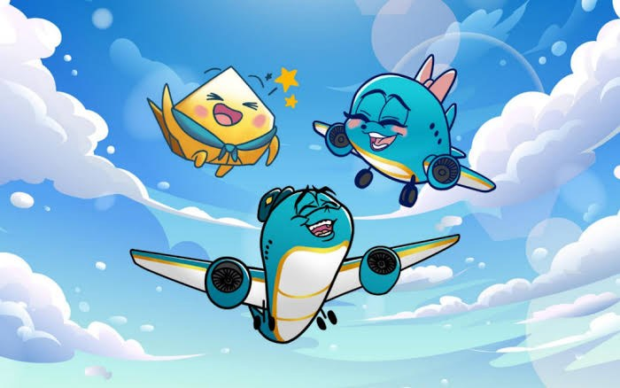

35–45
Current core engine
Values trust, safety and good fares for family trips.
- Behind the Scenes
- Crew & People
- The Plane in the Sky

Case study · Chapter 1
Vietnam Airlines’ Instagram had stalled at about 210K followers and spoke only to travellers who already trusted the brand. I built a two-audience strategy: six content pillars and a Reels-first plan to reach Gen Z without losing the 35–45 core.
The 30-second version
Instagram had plateaued at about 210K followers and spoke only to the 35–45 travellers who already trusted the brand. Gen Z, the next generation of VNA passengers, had no reason to follow.
Public Relations Intern. I built the Instagram content strategy: audience segmentation into two engines, six content pillars and a Reels-first distribution model.
+20% reach and a 2–4% engagement rate in two months, with follower growth restarted past the plateau (+2K).
01 · The challenge
Vietnam Airlines Instagram was talking to one audience: the 35–45 flyers who already trusted the brand.
Growth had flattened at around 210K followers, and the page had no voice for younger travellers, the next generation of VNA passengers.
The task was not a rebrand. It was a portfolio problem: protect the equity the page already had with its core audience, while building a second, discovery-led content stream for a segment that finds travel through short-form video rather than fare announcements.

Find the missing angle. Keep the core audience’s trust while opening a short‑form, trend‑led lane for Gen Z.
Content spoke to loyal 35–45 flyers. With no entry point for younger travellers, the page was reinforcing an existing audience instead of recruiting the next one.
Follower growth had flattened. On a mature account, growth comes from reaching non-followers, which means formats the platform will distribute beyond the existing audience.
Fare-led posts give viewers little to react to or share. Without saves, shares and watch time, the algorithm has no reason to push content further.
02 · Consumer insight & strategy
Before any post was made, the strategy had to answer six questions. Everything else on this page, the pillars, the formats and the schedule, follows from these answers.
01 · Objective
02 · Audience
03 · Insight
04 · Proposition
05 · Channel role
06 · Success
03 · The content pillars
The six pillars map directly onto the two engines: three retention pillars for the 35–45 core, three acquisition pillars for Gen Z. Running them on a consistent schedule gave the page a predictable weekly rhythm, so both audiences always had a reason to come back and the account stayed active in the algorithm week after week.
For the core engine · 35–45
Show the work that makes a flight safe.
Trust is what this audience values most. So instead of telling them Vietnam Airlines is safe, the feed showed them: the engineers, checks and routines that happen before every departure.
On the feedThe engineers who keep every flight safe.

For the core engine · 35–45
Put faces to the brand.
The cabin crew in their áo dài are the most recognisable part of flying Vietnam Airlines. Showing the people behind the service turns a uniform into someone viewers want to follow.
On the feedThe faces and áo dài behind the service.

For the core engine · 35–45
Let the aircraft be the hero.
Clean, cinematic shots of the fleet, plus brand moments like the 30th anniversary, give long-time flyers the pride and polish they expect from a national carrier.
On the feedThe aircraft as the hero shot · Vietnam Airlines’ 30th anniversary.
For the future engine · Gen Z
Give the brand a character to follow.
I wrote a storyline for the VNA mascot, turning it into a recurring character. Instead of one-off ads, younger viewers get a story that continues from post to post.
On the feedThe VNA mascot crew, with a storyline that carries from post to post.

For the future engine · Gen Z
Sell the trip, not the ticket.
Gen Z finds where to go on social first. Spotlighting lesser-known places like T’Nưng Lake in Gia Lai turns the feed into travel inspiration, with Vietnam Airlines as the way to get there.
On the feedT’Nưng Lake, a hidden gem worth saving.

For the future engine · Gen Z
Speak the platform’s language.
Cabin crew on viral short-form formats and trending audio. Reels did the heavy lifting: they were pushed to non-followers through Explore and Reels, bringing new, younger viewers to the page.
On the feedCabin crew on a viral short-form format.

04 · My role
06 · The results
Growth came from two directions. Trend clips and behind-the-scenes crew content gave younger viewers a reason to follow. Big-news moments, the Tết campaign and the Long Thành airport announcement, drove the largest jumps.
Reels did the heavy lifting. Short-form video on trending audio was pushed to non-followers through Explore and Reels, and a consistent pillar schedule kept the page active in the algorithm week after week.
Content built around people, places and trends gave viewers something to react to and share, rather than fares to scroll past.
+2K on a 210K base in two months. Small in absolute terms, but meaningful for a mature account whose growth had flattened.
+20% reach against ≈1% follower growth means content was travelling well beyond the existing audience: the acquisition engine doing its job.
The biggest jumps came from news moments (Tết, the Long Thành airport announcement), so always-on pillars work best paired with timely, reactive content.
Measurement plan
Follower counts alone say little. The useful picture comes from reading each funnel stage with its own metric and tool, then connecting social activity to the commercial outcome, which is the step most social reporting skips.
| Stage | Question | KPI | Tool & data source |
|---|---|---|---|
| ReachReported | Is content leaving the follower base? | Total reach, share of reach from non-followers, Reels plays | Instagram Insights |
| EngageReported | Is it worth reacting to? | Engagement rate, saves and shares per post, by pillar | Meta Business SuiteSheets |
| GrowReported | Is the audience actually shifting younger? | Net new followers, follower age split month on month | Insights · Audience |
| ConvertNext | Does social send people to book? | Link clicks, sessions and bookings from social | UTM parametersGA4 |
| LearnNext | Which pillars and hooks earn their slot? | Watch-through rate by hook, performance by pillar | Reels retentionLooker Studio |
Reach, engagement and follower growth are the reported results above. The Convert and Learn rows are what I would add next.
Dashboard
Two months on Instagram, Dec 2025 – Feb 2026. Only reported figures are plotted.
Reach
Index: prior period = 100. A 20% lift.
Engagement
Posts landed in a 2–4% band.
Followers
Recommendations, not results: how I would build on the first two months.

Next case study